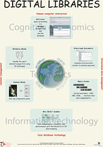

The Mirror MMDBMS architecture

Screenshots accompanying the
technical demo and poster presented at VLDB 99.
Index:
Overview,
Relevance feedback,
Thesauri,
Another example,
Architecture,
Concluding remarks.
This demo introduces the Mirror architecture for multimedia database
management systems. Like any DBMS, a MMDBMS is a general-purpose
software system that supports various applications; however, the support is
targeted to applications in the specific domain of digital libraries. Three
new requirements are identified for this domain: 1) multimedia objects are
active objects, 2) querying is an interaction process, and 3) query
processing uses multiple representations. Mirror's design therefore provides
basic functionality for the management of both the content structure and the
logical structure of multimedia objects. The inference network retrieval
model, the basis of a well-known IR system, is adapted for multimedia
retrieval. Other characteristics of the Mirror architecture are the support
for distribution of both data and operations, and extensibility of data
types and operations.
In these pages, we take a tour along an image retrieval application that has
been constructed using the Mirror architecture.
The system architecture and design rationale are further discussed in the paper
published in the VLDB Proceedings, as well as various other papers, all linked
from the
Mirror web pages.
Interaction with users in a multimedia retrieval task is tricky,
because the users cannot tell us precisely what their multimedia information
needs are. This problem may be addressed by using relevance feedback
given by the user.
Short-term learning tour
Relying completely on short-term interaction is not sufficient for
multimedia information retrieval. As a solution, thesauri model background
knowledge, which helps to 1) bootstrap the iterative process and 2) obtain
quicker convergence.
Long-term learning tour
While searching or browsing, you may suddenly decide to look for
something else. In this situation, querying will be completely driven by
examples.
Changing your mind
Before we finish the tours, let's take a brief look at the underlying
system architecture.
How it works
As illustrated in the screenshots above, the current implementation of the
Mirror DBMS supports sufficient functionality to create a state-of-the-art
image retrieval system. In preliminary experiments, we have applied the same
functionality to music fragments as well. And, the same queries have been used
to participate in the evaluation of text retrieval systems at TREC-8.
Expressing the retrieval problem as a small number of declarative queries
enables the reuse of code, allows the combination of IR querying (as above)
with traditional database queries, and allows the system to optimize during
query processing.
In our future work, we will continue the development of the Mirror DBMS,
focusing on the following two aspects:
- efficiency and scalability;
- retrieval models and learning.
The first aspects requires more attention to help us increase the size of the
collections that can be handled. We believe that the declarative query
specifications are extremely useful to gain understanding in how to distribute
and parallellize query processing. The second aspect is necessary to improve
our - still rather limited - understanding of interaction between user and
retrieval system.
Index:
Overview,
Relevance feedback,
Thesauri,
Another example,
Architecture,
Concluding remarks.
Home:
MIRROR.
(Left blank on purpose)
 Last updated: December 9, 1999
Last updated: December 9, 1999
Maintained by: arjen@acm.org